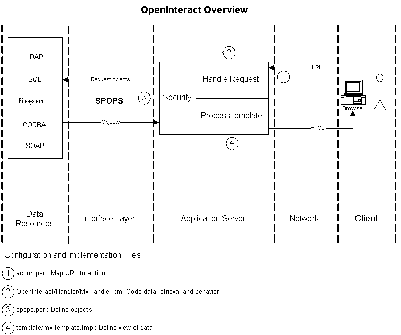

OpenInteract implements a mod_perl content handler (2) that takes all requests. It parses the URL and maps it to a module (1) which will generate the content for the page. (That module can in turn call any number of other modules, but that's getting into details.)
The content handler calls separate modules to parse cookies, create a session to compensate for the stateless http request paradigm, and ensures that the user is properly authenticated (3). It passes the module information to the user interface handler, which calls the module and puts it into the site template so every page looks the same (4).
OpenInteract also handlers errors in a uniform fashion, enables database connection pooling, and manages user interface elements (colors, fonts and otherwise) through a web interface.
Configuration of OpenInteract is done through human-readable and editable text files (formatted as Perl). This also enables each configuration file to be brief and to the point.
There are two levels of configuration files:
OpenInteract::Config object. See the
sample server.ini for the
specific configuration directives.
Just about everything you see as a user looking at an OpenInteract website is a template. Templates provide a way to put the "values" of objects into HTML pages. (This is done using the Template Toolkit, a standard Perl module available from CPAN.)
If a user wants to affect some object (edit, remove, create), he does so by clicking and pointing at things in the browser. The browser shows the HTML resulting from a processed template (4). So all standard techniques for user interaction through a web growser (e.g., Javascript, forms, links, upload fields, etc.) are available in OpenInteract by creating appropriate templates.
You can use any existing tools for creating the templates -- HTML editors, etc. You can also do simple online editing through the OpenInteract template editing tool in the web browser.
It is important to understand that in OpenInteract templates are the only way to expose data (as objects) to the user. From a user point of view, all OpenInteract does is put objects into templates. (Obviously, there is a lot more going on in the background, but this is a useful way of looking at things.)
The appearance of an OpenInteract application is almost entirely controlled by a theme. A theme defines the appearance of background colors, fonts, border colors of boxes, and standard graphical elements like bullets, etc. Themes implement the notion of "style sheets" in OpenInteract. (This is not to be confused with Cascading Style Sheets, which are a different means to control the appearance of raw HTML.)
You can define as many themes as you like, inheriting most attributes from a parent theme and only overriding a few. Setting the theme to be used is as simple as a few clicks, and you can develop themes behind the scenes, testing out and tweaking the appearance, then rolling it out for everyone.
Besides storing your objects in a database and displaying them to the user, OpenInteract provides a very simple, flexible and standard scheme of access control by way of users and groups. The scheme is characterized by the following (those in the know will recognize this as the Unix way of doing things):
That's it.
There are two levels of security in OpenInteract: data security and
action security. Data security is described extensively in the
documentation of the SPOPS interface layer. (See this using the System
Documentation tool in your OpenInteract website or via the command
line with perldoc SPOPS.)
Enabling an object to use security is as simple as a few lines in
the SPOPS configuration file (spops.perl, see
above). Afterward, you can set the security for the entire world, or
on a per-group and per-user basis. Each user and group can have
specific permissions to an object, and the most specific permission is
always utilized.
The SPOPS security model is also utilized for actions, not just objects. For instance, you might want to establish a policy that states all users who are not logged in can view events, but they cannot add new ones. This implements the notion of "policies" in OpenInteract and defined at the handler level (2).
OpenInteract has a fairly robust error handling system that allows certain errors to simply be logged into the system, others to trigger a notification to an administrator or module author, and others to change what the user sees onscreen.
In addition, OpenInteract comes with a very capable error browsing package that allows you to filter errors by date or type, making it easy to pinpoint problems in your website.